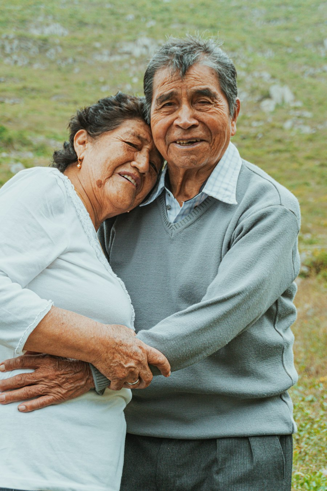
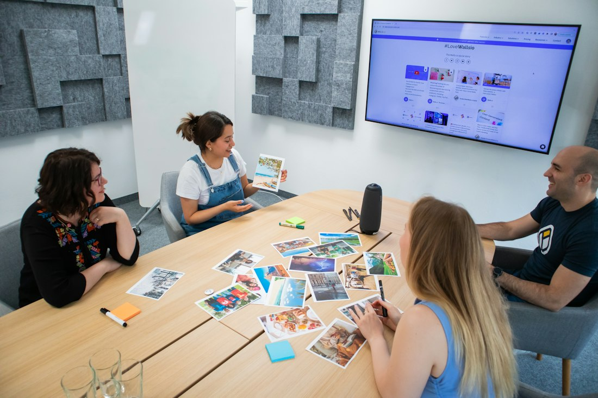

Personal care
Respectful support with personal routines, mobility, meals and everyday wellbeing.
Browse our aged care and disability support services. Call us to discuss your needs, funding and availability.
Browse our published services below. Contact the team to confirm suitability, current availability and funding arrangements.
Practical support with routines, personal activities and independent living.

Respectful support with personal routines, mobility, meals and everyday wellbeing.
Build practical skills for everyday independence, including cooking, budgeting and daily routines.
Practical help with cleaning, laundry, meal preparation and keeping your home comfortable.
Personalised assistance with everyday life in an independent or shared home.
Explore connection, travel, activities, work and study support.
Stay connected through social, recreational, cultural and community activities.
Explore interests, develop skills and build confidence through meaningful activities.
Support to get to appointments, education, work and activities in your community.
Practical support with job readiness, applications, study skills and workplace confidence.
Explore help with plan administration and connecting services.

Support with invoices, provider payments, budget tracking and financial reporting.
Help understanding your NDIS plan and connecting with suitable services and supports.
Looking for aged care? Talk to us about help at home and staying connected. We’ll discuss suitable services, availability and funding for your circumstances.